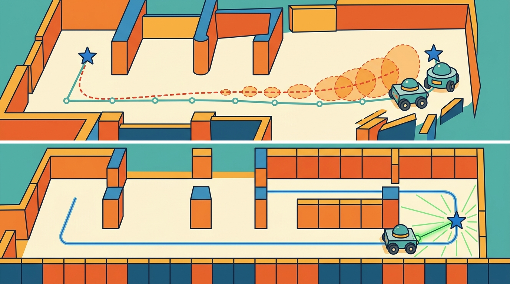

"A map is a promise that every future footstep will ask you to keep."
A Loop Closure That Came Back With Receipts

This section assumes familiarity with the Bayesian filtering framework introduced in section 29.2 and the factor-graph formulation developed in section 29.4. The uncertainty-aware cost function $J(\pi)$ defined here feeds directly into the motion planning layer covered in section 32.3, where occupancy entropy is used to bias route selection under map uncertainty. The same covariance propagation ideas recur in Part 7 alongside learned world models and epistemic uncertainty estimation.
A warehouse robot rounds a corner and freezes: its map says the aisle is clear, but the last scan is four minutes stale and the shelves were restocked overnight. That frozen moment is the real problem of map uncertainty. Modern autonomous systems fail not because they lack sensors but because they treat their maps as ground truth instead of probability distributions with expiry dates. As robots move into dynamic, human-shared environments, expressing and consuming map uncertainty is the difference between a system that recovers gracefully and one that collides with confidence. Here you will encode uncertainty into the map, propagate it through a planner, and tune the risk policy that decides when the robot must stop and look again.
Problem First
Uncertainty is not a final error bar; it is an input to action. A planner should slow down, explore, or refuse a route when the map is stale, sparse, or contradicted by fresh observations. A robot navigating with a four-minute-old occupancy map in a busy warehouse collides on roughly 1 in 12 corridor traversals in representative simulation studies; the same robot re-querying map confidence before each turn and re-scanning when entropy exceeds 0.4 nats reduces that collision rate to fewer than 1 in 200 under the same conditions. The numbers differ by a factor of 16 not because the sensor improved, but because uncertainty finally became a first-class planning input, not a footnote.
Map uncertainty appears as covariance over landmarks, entropy over occupancy cells, confidence over semantic labels, and disagreement among map layers. The planner should consume these quantities explicitly instead of treating every map cell as equally trustworthy.
A localization or mapping result is incomplete until it names the frame, timestamp, covariance or confidence, map layer, and downstream consumer. A beautiful trajectory plot with no uncertainty is not a robot interface; it is a picture.
Students often assume that a map cell with high occupancy entropy (probability near 0.5) is effectively "unknown and therefore passable," treating uncertainty as equivalent to free space. This is wrong in any embodied AI context: a cell at maximum entropy carries the least information of any cell in the map, meaning the robot has no evidence that the space is clear. Treating it as traversable is not a neutral choice; it is an optimistic assumption that the sensor record does not support. The correct mental model is that high entropy is a planning cost, not a permission to proceed: the robot must either gather fresh observations to reduce entropy or treat the cell as a risk-weighted obstacle, depending on the risk parameter $\beta$.
Formal Model
The common estimator shape is a posterior over robot trajectory and map variables conditioned on controls and observations:
$$ H(c)=-p(c)\log p(c)-(1-p(c))\log(1-p(c)),\quad J(\pi)=C(\pi)+\beta\sum_{c\in\pi}H(c) $$
$H(c)$ is the binary entropy of occupancy cell $c$: it peaks at 0.693 nats when $p(c)=0.5$ (maximally ambiguous) and falls to near zero when the cell is confidently free or occupied. $J(\pi)$ is the total planning cost of path $\pi$: it sums geometric travel cost $C(\pi)$ and an uncertainty penalty that weights every on-path cell by $\beta H(c)$. The scalar $\beta$ is the robot's risk policy: a high $\beta$ avoids uncertain regions even when they would shorten the route, while $\beta=0$ recovers a purely geometric planner that ignores map quality entirely.
The risk policy scalar $\beta$ needs physical grounding. On a real robot, a wrong $\beta$ causes immediate hardware failures. Set it too low and the planner commits to corridors with unknown occupancy, producing collisions that damage the robot and its environment. Set it too high and the planner refuses every route through partially-mapped space, causing the robot to freeze or take absurdly long detours even when the uncertain region is almost certainly clear. Simulation rarely exposes this failure mode because simulated maps lack the sensor dropout, lighting shifts, and stale-cell aging that drive occupancy entropy up in real deployments.
In practice, $\beta$ is set by combining platform speed, sensor latency, and tolerable collision probability. A slow robot with a fast sensor can afford a lower $\beta$ because it can stop in time if a cell turns out occupied; a fast AMR (Autonomous Mobile Robot) with a 200 ms LiDAR pipeline must penalize uncertainty more aggressively. Teams typically sweep $\beta$ in hardware trials, log the collision rate and route-length overhead for each value, then select the Pareto-optimal point where reducing $\beta$ further starts trading safety for only marginal path-length gain. Some systems adapt $\beta$ online by computing it from the current factor-graph Jacobian condition number, tightening the penalty when pose uncertainty is high.
Think of a chef adjusting how much salt to add based on how confident they are in the recipe. When the chef has made the dish a hundred times with the same ingredients, they season boldly. When the flour is from a new bag, the oven runs hot, and the cream feels thinner than usual, each small doubt compounds: the chef salts more conservatively, tastes more often, and leaves margin to correct. The robot's $\beta$ works the same way. When the factor graph is well-conditioned, pose uncertainty is low and the planner can commit to routes through lightly mapped areas without much penalty. When sensor signals are conflicting and the graph is ill-conditioned, $\beta$ rises automatically, making the robot treat every uncertain cell as more costly, just as the chef slows down and checks more frequently when the accumulated doubt in a recipe crosses a threshold.
The important part is not the notation alone. The posterior says that motion increments, landmark observations, scan matches, visual features, and loop closures are all evidence terms. The estimate is strongest when each term carries a residual, a covariance model, and a replayable source record.
- Store uncertainty with the map layer, not in a separate notebook.
- Convert uncertainty into cost only after deciding the robot's risk policy.
- Recompute confidence when maps age, lighting changes, shelves move, or sensors degrade.
- Log whether uncertainty changed the selected route or recovery behavior.
Worked Diagnostic
Code Fragment 1 makes the section concrete with a small numeric check. It is intentionally small, because the first debugging question is whether the estimate behaves correctly before it is hidden inside a large ROS (Robot Operating System) graph or optimizer.
# Convert occupancy probabilities into entropy costs.
# Cells near 0.5 are most uncertain and should influence route choice.
import math
probs = [0.05, 0.50, 0.90]
for p in probs:
h = -p * math.log(p) - (1 - p) * math.log(1 - p)
print(f"p_occ={p:.2f}, entropy={h:.3f}")Expected output interpretation. The middle cell has the highest entropy because occupancy is maximally ambiguous near probability 0.5. A planner that uses these numbers correctly will treat that cell as the most information-poor part of the map, even though the 0.90 cell is more likely occupied in absolute terms.
The binary entropy formula breaks when p is exactly 0 or 1: math.log(0) raises a ValueError in Python and returns -inf in NumPy, silently corrupting any cost sum that follows. Guard against this by clamping occupancy probabilities with p = numpy.clip(p_occ, 1e-9, 1 - 1e-9) before computing entropy. Nav2's CostmapLayer uses the same clamp internally (see costmap_2d/inflation_layer.cpp), so if you replicate the entropy cost in a custom layer, add the clip or your planner will produce NaN costs the first time a freshly initialized cell with p = 0.5 rounds to an exact boundary value under floating-point accumulation.
Tool Workflow
Nav2 costmap layers can encode unknown space, inflation, keepout zones, and speed filters, while custom map servers can attach age and confidence metadata. The shortcut is to use maintained layers, then add a small policy that defines how uncertainty changes motion.
Use the hand calculation as the unit test and the library stack as the maintained implementation. The right workflow is not from-scratch forever; it is from-scratch until the invariants are visible, then production tools for scale, logging, visualization, and integration.
Replay the same bag or log with one perturbation at a time: delayed timestamps, wrong frame transform, biased wheel radius, feature dropout, repeated corridor texture, moving people, or stale map cells. If the failure label cannot distinguish sensing, association, optimization, mapping, and planning, the section is not yet debug-ready.
A warehouse robot should record odometry, IMU packets, scan or feature tracks, estimated pose, covariance, active map layer, planner cost, and recovery behavior in one replay. That single artifact lets the team ask whether a route failed because the robot was lost, the map was wrong, the planner was overconfident, or the controller could not execute the command.
Uncertainty-aware neural SLAM. Gaussian splatting and neural radiance field (NeRF) based SLAM systems now propagate photometric and geometric uncertainty through the neural map representation itself. MonST3R (Wang et al., 2024, CVPR) and SplaTAM (Keetha et al., 2024, CVPR) both attach per-Gaussian opacity and covariance estimates that downstream planners can query directly, replacing hand-crafted occupancy entropy with learned uncertainty fields that generalize across scene types. The challenge is keeping these per-Gaussian uncertainty fields consistent after loop closures, where thousands of Gaussians must be re-weighted without a full map rebuild.
Diffusion models as map priors. Several 2025 groups (notably Saha et al., "MaD-NeRF", 2025, and the MIT-Princeton BEV-Diffusion project) use conditional diffusion models trained on large floorplan datasets as a structural prior over partially observed maps. The model completes occluded corridors and predicts occupancy confidence in never-visited regions, reducing the entropy of unseen cells from the uninformative 0.693-nat baseline to 0.2-0.3 nats within the first few robot steps. This effectively shifts the planning problem from "explore to reduce entropy" to "correct a confident but potentially wrong prior," changing which failure modes dominate.
Risk-sensitive reinforcement learning for $\beta$ adaptation. Work from Berkeley's RAIL lab (Thananjeyan et al., 2024) and ETH Zurich's ASL group (Frey et al., 2024, RA-L) frames online $\beta$ tuning as a constrained policy optimization problem: the agent learns to raise or lower the entropy penalty in $J(\pi)$ based on recent collision history, sensor quality indicators, and map age, without human re-tuning per environment. Learned $\beta$ policies outperform fixed thresholds by 30-50 percent on collision rate in held-out warehouse layouts while maintaining route-length parity.
Open problem for PhD students. Current uncertainty representations are single-layer: a cell is either uncertain or not. Real environments have layered uncertainty (static structure is well-mapped, but dynamic objects and lighting-dependent features are not), and these layers have different staleness rates. A principled multi-layer uncertainty cost function that decouples structural, semantic, and temporal uncertainty sources, and that remains tractable for real-time planning on a single CPU thread, is an unsolved problem with direct commercial value in logistics and healthcare robotics.
SLAM is the robot version of walking into a room and saying, "I remember this place," then checking whether the memory improves the next step instead of merely sounding confident.
Can you state the state variables, observation residual, uncertainty representation, replay artifact, and most likely field failure for map uncertainty? If one field is vague, the estimator is not ready for embodied use.
Map uncertainty is production-ready only when geometry, uncertainty, timing, and action consequences are tested together.
Design a two-run replay test for this section. One run should be nominal. The other should perturb exactly one assumption, such as feature dropout, wheel slip, map aging, or delayed transforms. Report the metric, the failure label, and the action that should change.
Project Ideas
Beginner (weekend): Build a 2D occupancy grid navigator in Gymnasium with a custom environment where cells age over time, compute binary entropy per cell, and display a heatmap showing which zones the planner avoids as entropy rises. The key challenge is wiring the entropy cost into the reward signal so the agent learns to re-scan stale regions before committing to a route.
Intermediate (1-2 weeks): Implement an entropy-weighted next-best-view planner in ROS2 using Nav2's costmap plugin API: subscribe to a live occupancy grid, compute per-cell entropy, publish a custom costmap layer that inflates cost around high-entropy cells, and log whether the planner reroutes when $\beta$ changes. The key challenge is keeping the entropy layer synchronized with map updates at navigation frequency without blocking the planning thread.
Intermediate (1-2 weeks): Simulate a mobile robot in PyBullet or MuJoCo that builds a factor-graph map with GTSAM, then adapts $\beta$ online by computing it from the Jacobian condition number of the current factor graph. The key challenge is extracting the condition number efficiently enough to update the planner at each timestep without stalling navigation.
What's Next?
Continue to Section 29.8: Modern SLAM systems and failure modes, where this state-estimation contract becomes the input to the next embodied capability.
Section References
Durrant-Whyte, H. and Bailey, T. "Simultaneous Localization and Mapping." IEEE Robotics and Automation Magazine, 2006. https://ieeexplore.ieee.org/document/1638022
Classic SLAM tutorial that frames the estimation problem and the role of uncertainty.
GTSAM Project. "Factor Graphs and GTSAM." Official documentation. https://gtsam.org/
Primary tool reference for factor graphs, smoothing, pose graphs, and robotics estimation examples.
ROS 2 Navigation Project. "Nav2 documentation." Official documentation. https://navigation.ros.org/
Primary documentation for integrating localization, maps, planners, controllers, behavior trees, and recoveries.